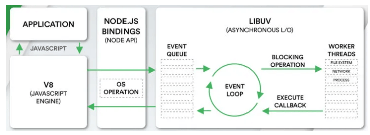
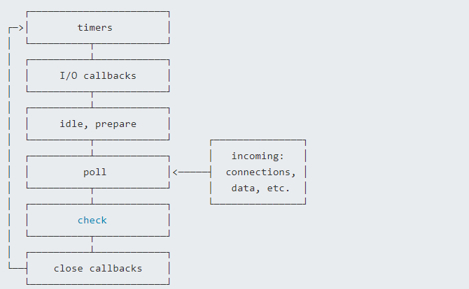
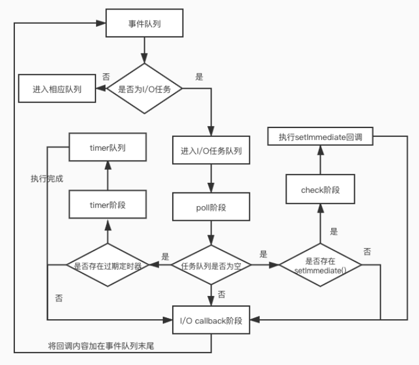

说说对Nodejs中的事件循环机制理解?
参考答案
一、是什么
在浏览器事件循环中，我们了解到javascript在浏览器中的事件循环机制，其是根据HTML5定义的规范来实现
而在NodeJS中，事件循环是基于libuv实现，libuv是一个多平台的专注于异步IO的库，如下图最右侧所示：

上图EVENT_QUEUE 给人看起来只有一个队列，但EventLoop存在6个阶段，每个阶段都有对应的一个先进先出的回调队列
二、流程
上节讲到事件循环分成了六个阶段，对应如下：

- timers阶段：这个阶段执行timer（setTimeout、setInterval）的回调
- 定时器检测阶段(timers)：本阶段执行 timer 的回调，即 setTimeout、setInterval 里面的回调函数
- I/O事件回调阶段(I/O callbacks)：执行延迟到下一个循环迭代的 I/O 回调，即上一轮循环中未被执行的一些I/O回调
- 闲置阶段(idle, prepare)：仅系统内部使用
- 轮询阶段(poll)：检索新的 I/O 事件;执行与 I/O 相关的回调（几乎所有情况下，除了关闭的回调函数，那些由计时器和 setImmediate() 调度的之外），其余情况 node 将在适当的时候在此阻塞
- 检查阶段(check)：setImmediate() 回调函数在这里执行
- 关闭事件回调阶段(close callback)：一些关闭的回调函数，如：socket.on('close', ...)
每个阶段对应一个队列，当事件循环进入某个阶段时, 将会在该阶段内执行回调，直到队列耗尽或者回调的最大数量已执行, 那么将进入下一个处理阶段
除了上述6个阶段，还存在process.nextTick，其不属于事件循环的任何一个阶段，它属于该阶段与下阶段之间的过渡, 即本阶段执行结束, 进入下一个阶段前, 所要执行的回调，类似插队
流程图如下所示：

在Node中，同样存在宏任务和微任务，与浏览器中的事件循环相似
微任务对应有：
- next tick queue：process.nextTick
- other queue：Promise的then回调、queueMicrotask
宏任务对应有：
- timer queue：setTimeout、setInterval
- poll queue：IO事件
- check queue：setImmediate
- close queue：close事件
其执行顺序为：
- next tick microtask queue
- other microtask queue
- timer queue
- poll queue
- check queue
- close queue
三、题目
通过上面的学习，下面开始看看题目
async function async1() {
console.log('async1 start')
await async2()
console.log('async1 end')
}
async function async2() {
console.log('async2')
}
console.log('script start')
setTimeout(function () {
console.log('setTimeout0')
}, 0)
setTimeout(function () {
console.log('setTimeout2')
}, 300)
setImmediate(() => console.log('setImmediate'));
process.nextTick(() => console.log('nextTick1'));
async1();
process.nextTick(() => console.log('nextTick2'));
new Promise(function (resolve) {
console.log('promise1')
resolve();
console.log('promise2')
}).then(function () {
console.log('promise3')
})
console.log('script end')分析过程：
- 先找到同步任务，输出script start
- 遇到第一个 setTimeout，将里面的回调函数放到 timer 队列中
- 遇到第二个 setTimeout，300ms后将里面的回调函数放到 timer 队列中
- 遇到第一个setImmediate，将里面的回调函数放到 check 队列中
- 遇到第一个 nextTick，将其里面的回调函数放到本轮同步任务执行完毕后执行
- 执行 async1函数，输出 async1 start
- 执行 async2 函数，输出 async2，async2 后面的输出 async1 end进入微任务，等待下一轮的事件循环
- 遇到第二个，将其里面的回调函数放到本轮同步任务执行完毕后执行
- 遇到 new Promise，执行里面的立即执行函数，输出 promise1、promise2
- then里面的回调函数进入微任务队列
- 遇到同步任务，输出 script end
- 执行下一轮回到函数，先依次输出 nextTick 的函数，分别是 nextTick1、nextTick2
- 然后执行微任务队列，依次输出 async1 end、promise3
- 执行timer 队列，依次输出 setTimeout0
- 接着执行 check 队列，依次输出 setImmediate
- 300ms后，timer 队列存在任务，执行输出 setTimeout2
执行结果如下：
script start
async1 start
async2
promise1
promise2
script end
nextTick1
nextTick2
async1 end
promise3
setTimeout0
setImmediate
setTimeout2最后有一道是关于setTimeout与setImmediate的输出顺序
setTimeout(() => {
console.log("setTimeout");
}, 0);
setImmediate(() => {
console.log("setImmediate");
});输出情况如下：
情况一：
setTimeout
setImmediate
情况二：
setImmediate
setTimeout分析下流程：
- 外层同步代码一次性全部执行完，遇到异步API就塞到对应的阶段
- 遇到
setTimeout，虽然设置的是0毫秒触发，但实际上会被强制改成1ms，时间到了然后塞入times阶段 - 遇到
setImmediate塞入check阶段 - 同步代码执行完毕，进入Event Loop
- 先进入
times阶段，检查当前时间过去了1毫秒没有，如果过了1毫秒，满足setTimeout条件，执行回调，如果没过1毫秒，跳过 - 跳过空的阶段，进入check阶段，执行
setImmediate回调
这里的关键在于这1ms，如果同步代码执行时间较长，进入Event Loop的时候1毫秒已经过了，setTimeout先执行，如果1毫秒还没到，就先执行了setImmediate
作答思路：
Node.js中的事件循环机制是一种异步编程模型，它基于事件驱动和非阻塞I/O。其核心是V8引擎和libuv库。V8负责执行JavaScript代码，而libuv负责处理系统调用和I/O操作。<br>事件循环的主要组成部分包括：
- 主事件循环（Main Loop）：负责处理异步任务，包括文件读写、网络请求等。
- 事件队列：存储等待处理的异步任务。
- 观察者模式：用于处理异步任务完成后的回调。
当有事件发生时，libuv会将事件放入事件队列，V8引擎会不断检查事件队列，如果有事件，则调用相应的回调函数。这种机制使得Node.js能够高效地处理大量的并发请求。
考察要点：
- 事件循环概念：理解事件循环在Node.js中的作用和基本原理。
- 异步编程模型：理解事件驱动和非阻塞I/O在Node.js中的应用。
- 事件队列和观察者模式：理解事件队列和观察者模式在事件循环中的作用。